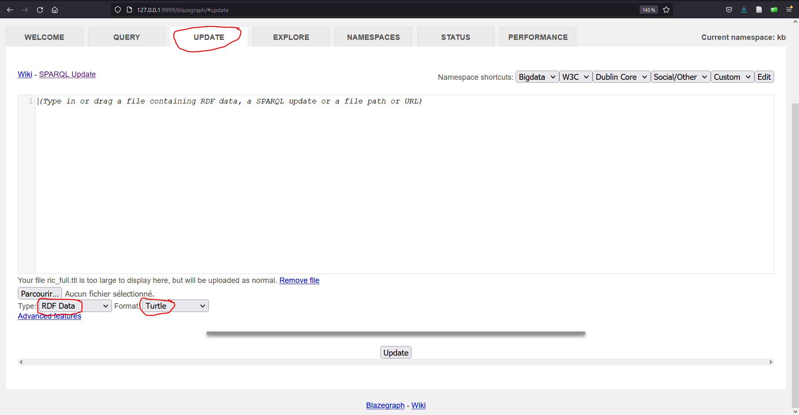

HEG-796-22-070
Valorisation
Jan Krause-Bilvin
2022-06-08
Mise en oeuvre
Conetenu de cette session:
- Valorisation et indexation
- Plateforme LDP: documentation de Fedora Commons
- Recherche : indexation vs. triple store
- Et pour finir …
1. Valorastion et indexation
Rappel
Besoin de “scalability”
En français, on pourrait dire d’“évolutivié”. Il y a une dimention d’échelle.
En pratique, considérons les concepts suivants:
- Messaging
- Conteneurs
- Fault-tolerence
Messaging
Dans les application modernes, on utilise souvent le concept de messaging.
Par exemple, la technologie Apache Caml dont Apache Kafka.
Conteneurs
Dans les application modernes, on utilise souvent le concept de conteneurs, une façon de déployer des applications encore plus efficiente que la virtualisation.
Par exemple, la technologie docker, voir aussi cette video.
De plus, des systèmes d’orchestration permettent d’orchester les containers, p.ex. kubernetes.
Fault tolerence
Éviter la corruption: le problème des Généraus Bizantins.

Il est démontré que pour tolérer f fautes, 3f+1 noeuds sont nécessaires. Cf. travaux de Lesslie Lamport fin des années 1970.
Ressources pour approfondir:
Résumé
- Messaging : optimiser le transfert de données entre les composants du système d’archivage
- Conteneurs : optimiser la charge des dans les datacenter et la protabilité (dépendances)
- Fault-tolerence : garantir la cohérence des données (prévention priratage et intégrité des données)
Fedora Commons est construit dans cette optique.
2. Plateforme LDP: documentation de Fedora Commons
Lyrasis - Fedora Commons - Documentation
- Architecture
- Installation (one click , docker)
- Configuration(paramètres)
- configuration docker (users, praramètres:fcrepo.properties)
- liste des paramètres
- exemples: fcrepo.external.content.allowed, fcrepo.autoversioning.enabled, fcrepo.metrics.enable
Points à ne pas ratter:
- Messaging
- External Search
- Metrics
- Auto-versionning
- Namespaces
- Recherche : indexation vs. triple store
Recherche : Indexation
Exemples de moteurs de recherche: Solr, ElasticSearch. Introduction.
Des règles pour l’indexation via le messaging doivent être définies, p.ex.: rico:title -> index titre.
Rechreche : Triple store
Nombreux outils disponibles, voir:
Exemple d’usage avec Blazegraph
blazegraph, un triple store en java.
Permet l’upload de turtle (via interface web ou API): 
Fonds privés de Monteux
Le logiciel et les données sont disponibles sur cyberlearn.
En ligne, cela correspond à: vaud.archivescommunales.ch - Montreux.
Utilisation:
cd blazegraph_fedora
java.exe -server -Xmx4g -jar blazegraph.jarPuis dans dans le navigateur: http://127.0.0.1:9999/blazegraph/
Quels prédicats RiC ont été utilisés?
PREFIX rico: <https://www.ica.org/standards/RiC/ontology#>
PREFIX rdf: <http://www.w3.org/1999/02/22-rdf-syntax-ns#>
PREFIX rdfs: <http://www.w3.org/2000/01/rdf-schema#>
SELECT DISTINCT ?pred WHERE {
?sub ?pred ?obj .
FILTER(regex(str(?pred), "RiC" ) )
}
LIMIT 100Lister les intitulés de tous les records.
PREFIX rico: <https://www.ica.org/standards/RiC/RiC-O_v0-2.html#>
PREFIX rdf: <http://www.w3.org/1999/02/22-rdf-syntax-ns#>
PREFIX rdfs: <http://www.w3.org/2000/01/rdf-schema#>
SELECT DISTINCT * WHERE {
?sub rico:title ?obj
}
LIMIT 100Qui est le parent de object:001228-4-PP060-A-01-04 ?
PREFIX object: <http://localhost:8080/rest/object/>
PREFIX rico: <https://www.ica.org/standards/RiC/RiC-O_v0-2.html#>
PREFIX rdf: <http://www.w3.org/1999/02/22-rdf-syntax-ns#>
PREFIX rdfs: <http://www.w3.org/2000/01/rdf-schema#>
SELECT DISTINCT * WHERE {
object:001228-4-PP060-A-01-04 rico:isOrWasPartOf ?obj .
}
LIMIT 100Qui sont les parents (récursifs) de object:001228-4-PP060-A-01-04 ?
PREFIX object: <http://localhost:8080/rest/object/>
PREFIX rico: <https://www.ica.org/standards/RiC/RiC-O_v0-2.html#>
PREFIX rdf: <http://www.w3.org/1999/02/22-rdf-syntax-ns#>
PREFIX rdfs: <http://www.w3.org/2000/01/rdf-schema#>
SELECT DISTINCT * WHERE {
object:001228-4-PP060-A-01-04 rico:isOrWasPartOf* ?obj .
}
LIMIT 100Qui sont tous les enfants (récursifs) de object:001228-4-PP060 ?
PREFIX object: <http://localhost:8080/rest/object/>
PREFIX rico: <https://www.ica.org/standards/RiC/RiC-O_v0-2.html#>
PREFIX rdf: <http://www.w3.org/1999/02/22-rdf-syntax-ns#>
PREFIX rdfs: <http://www.w3.org/2000/01/rdf-schema#>
SELECT DISTINCT * WHERE {
object:001228-4-PP060 ^rico:isOrWasPartOf* ?obj .
}
LIMIT 100Quels sont les records dont les intitulés:
- coniennent “hôtel”, “hotel”, “Hôtel”, or “Hotel”
PREFIX rico: <https://www.ica.org/standards/RiC/RiC-O_v0-2.html#>
PREFIX rdf: <http://www.w3.org/1999/02/22-rdf-syntax-ns#>
PREFIX rdfs: <http://www.w3.org/2000/01/rdf-schema#>
SELECT DISTINCT * WHERE {
?sub rico:title ?obj .
FILTER(regex(str(?obj), ".*[Hh][oô]tel.*" ) )
}
LIMIT 100Quels sont les records dont les intitulés:
- coniennent “hôtel”, “hotel”, “Hôtel”, or “Hotel”
- et datant des années 1930 ou 1940
PREFIX rico: <https://www.ica.org/standards/RiC/RiC-O_v0-2.html#>
PREFIX rdf: <http://www.w3.org/1999/02/22-rdf-syntax-ns#>
PREFIX rdfs: <http://www.w3.org/2000/01/rdf-schema#>
SELECT DISTINCT * WHERE {
?record rico:title ?title .
?record rico:isAssociatedWithDate/rico:expressedDate ?date .
FILTER(regex(str(?title), ".*[Hh][oô]tel.*" )) .
FILTER(regex(str(?date) , ".*19[34]\\d*" )) .
}
LIMIT 100- Et pour finir …
Exemples de réalisations suisses utilisant les concepts abordés à ce cours
- Bodmer Lab, UNIGE : FedoraCommons + ElasticSearch + InterfaceAdHoc
- memobase.ch : FedoraCommons + ElasticSearch + InterfaceAdHoc
- docuteam cosmos : FedoraCommons + Solr + AtoM / InterfaceAdHoc. Exemples:
Idées de TB
De nombreuses instances AtoM existent en Suisse, notemment:
- vaud.archivescommunales.ch
- ge.archivescommunales.ch
- caspar.cinematheque.ch
- architrave-hesge.ch
- arCHeco.info
- Registre Foncier valaisan
- f-information.org
- CIRA.ch
- …
De plus, les inventaires de Bâle-Ville, PTT et Memoriav sont déjà disponibles au format RiC.
Sujet possible de TP (variante à préciser/discuter):
- Intégration d’inventaires archivistiques dans le connectome
- Valorisation des archives sur Wikidata
- Diffusion d’inventaires archivistiques sur le Web sémantique
- Publication de la plateforme AtoM sur le Web sémantique
- etc.
Intéressé.e? => jan.krause@vd.ch
Évolution du cours
=> Évaluation du cours en ligne sur le portail AGE.